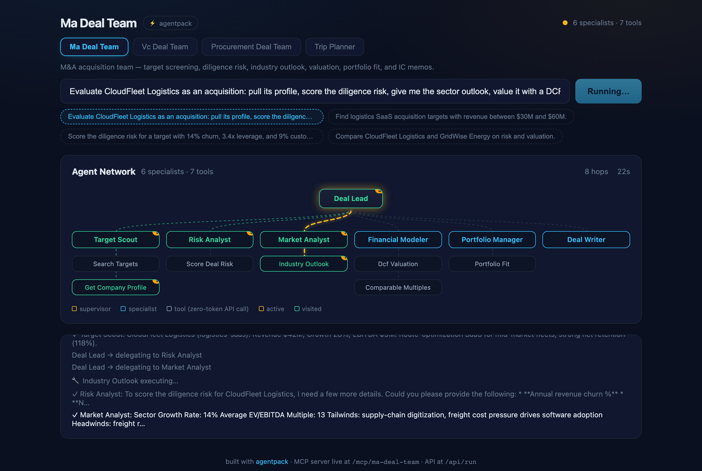

Define your AI agent team in one YAML file — get a LangGraph supervisor, a live agent-network UI, an auto-generated MCP server, and a behavioral eval harness.

One command scaffolds a complete project; one key (OpenAI, Gemini, or Groq) runs it.
# scaffold
npx @selvaonline/agentpack init my-team
cd my-team && npm install
cp .env.example .env # add ONE LLM key
# run — live network UI at http://localhost:3000, MCP at /mcp
npm run dev
# prove it behaves
npm run evalEverything — supervisor, specialists, tools, even human approval gates — is one YAML file.
name: trip-planner
title: Trip Planner Agent
description: Travel planning with a destination scout, budget planner, and itinerary writer.
supervisor:
name: trip_advisor
prompt: ./prompts/supervisor.md
specialists:
- name: destination_scout
description: Researches destinations, attractions, and seasonal weather.
prompt: ./prompts/destination_scout.md
tools: [search_destinations, get_weather]
- name: budget_planner
description: Estimates trip costs and builds budget breakdowns.
prompt: ./prompts/budget_planner.md
tools: [estimate_costs]
approval: true # human-in-the-loop: pause until the user approves
tools:
- ./tools # plain TS/JS modules — auto-discovered
- mcp:https://remote-host/mcp # or pull every tool from a remote MCP serverA supervisor agent decomposes requests, delegates to specialists, and synthesizes a final report — generated from your manifest, no graph code.
Watch delegation happen: animated supervisor → specialist → tool hops, token streaming, a live token meter, and light/dark themes.
Every team is an MCP server at /mcp — Claude Desktop, Cursor, or any MCP client can call your tools. Schemas derived, never hand-written.
Routing, completeness, refusal, latency budgets — plus --judge for LLM-as-judge scoring. CI-ready with the bundled GitHub Actions workflow.
Compose a custom agent from the tool catalog without code — it runs live, gets its own MCP endpoint, and the URL is shareable.
Mark any specialist approval: true and runs pause for an explicit Approve / Decline before it executes.
One script tag drops a live agent-network panel into any page: <script src=".../widget.js" data-pack="my-team">.
Mix local TS/JS tool modules with remote MCP servers in the same team — tools: [mcp:https://…].
npx @selvaonline/agentpack init <dir> --template <id>
| Template | Team |
|---|---|
starter | Trip Planner — scout, budget planner, itinerary writer |
deal-ma | M&A Deal Agent — six-role deal lifecycle for acquisitions |
deal-vc | VC Deal Agent — sourcing, founder risk, TAM, dilution, memos |
deal-procurement | Procurement Deal Agent — supplier sourcing to contract award |
equity-research | Equity Research Agent — screening, earnings quality, DCF, initiation notes |
claims-triage | Claims Triage Agent — intake, fraud score, severity, decision |
support-triage | Support Triage Agent — tickets, known issues, priority/SLA, replies |
| Endpoint | What it does |
|---|---|
GET / | Dev UI — network panel, pack switcher, builder |
POST /api/run | Start a run: { query, pack?, threadId? } → { runId } |
GET /api/stream/:runId | SSE stream: hops, tool calls, tokens, usage, approvals |
POST /api/approve | Resolve a human-in-the-loop gate |
POST /api/packs | Create a custom team from the browser builder |
POST /api/suggest | AI-assisted builder: a description in, a full team spec out |
GET /api/toolcatalog | Every tool available to the builder |
/mcp · /mcp/:pack | Model Context Protocol server per team |
GET /widget.js | Embeddable live network panel for any site |
<script src="https://agentpack.selvaonline.com/widget.js" data-pack="ma-deal-team"></script>
<div id="agentpack-widget"></div>Evals drive the real server through the same SSE contract the UI uses — they test the full stack.
npm run eval # deterministic: routing / completeness / refusal / latency
npx agentpack eval --judge # + LLM-as-judge scoring against free-form criteriaPASS routing_screen agents=["coverage_scout"] tools={"screen_companies":1}
PASS completeness_initiation judge score=10/10 — initiation note with rating and price target
PASS honesty_refusal agents=[] (off-topic request: no delegation, polite decline)